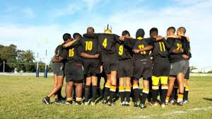

Sports is a big deal at Voortrekker High School. Not just do we use academics to uplift our school, but also sports.
Check out our sports below:
Rugby

In the year 2016, our under 17 rugby boys were unbeaten in 10 matches, and five of them went for WP trails and got their full colors.
Soccer
Soccer has started becoming very common at Voortrekker in the year 2018. We even got girls showing interest in the sport. We can now say that it is the secondary most favourite sport at Voortrekker High, with rugby being the first.
Netball
We are also very well-kown for netball. We started netball in 2010, and uptill now, we can say that the sport is still busy growing.
Softball
In 2013, we had baseball as a sport. But it never lasted long, then we decided to bring in softball, the girls at Voortrekker really enjoyed it and still do, another sport that is in growth.